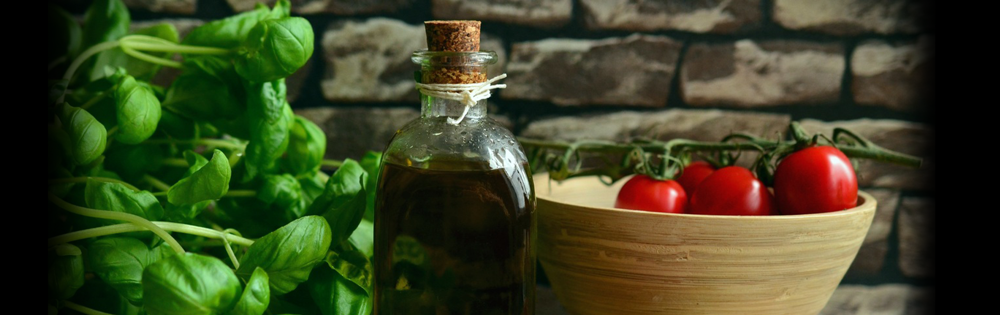

RECETAS VEGETARIANAS
HAMBURGUESA

Ingredientes
- 1 taza de mijo
- 1 huevo
- 1 cebolla
- 1 zanahoria (u otra verdura a elección)
- Sal, cúrcuma o pimentón
- 2 cucharadas de fécula de maíz o harina
Procedimiento
- Lavar el mijo y dejarlo en remojo. Al mismo tiempo, rallar la zanahoria bien chiquita.
- Saltear la cebolla. Hervir el mijo como si fuese arroz (una taza de cereal, por tres de agua. Hay que tener en cuenta que con la cocción triplica su volumen y queda cremoso). Colar y dejar enfriar.
- Mezclar todos los ingredientes y agregar dos cucharadas de fécula de maíz o harina. Hacer bolitas.
- Achatarlas y apoyarlas en una fuente de horno aceitada. Dorar por ambos lados hasta que estén crocantes.
ENSALADA
Ingredientes
- Lechugas de varios tipos lavadas y cortadas
- 1 Pepino de ensalada cortado en rodajas
- 4 Tomates pelados y cortados en gajos
- 200 gr de queso de cabra cortado en cubos de 1 cm
- 200 gr de aceitunas rellenas o aceitunas negras
- 100 gr de pasas (opcional)
- 2 cucharadas de aceite de oliva
- 1 cucharada de aceto balsámico
- Sal y pimienta a gusto
Procedimiento
- En un bol colocar la lechuga, los tomates picados en rodajas, el pepino cortado en rodajas, el queso de cabra, las aceitunas y las pasas (opcionales). Sazonar con el aceite, aceto balsámico, sal y pimienta.
TOFU CON SALSA DE MANDARINA
Ingredientes
- 220 g de tofu
- 3 mandarinas
- 35 ml de salsa de soja
- Ajo granulado 1/2 cucharadita
- Pimentón dulce 1/2 cucharadita
- Ajo granulado 1/2 cucharadita
- Pimienta negra 1/4 cucharadita
- Comino molido 1/4 cucharadita
- 1 Cebolleta mediana
- 5 ml de pasta de tomate concentrado
- 15 ml vinagre de arroz o manzana o Jerez
- 200 ml caldo de verduras o agua
- Aceite de oliva virgen extra
- Sal una pizquita
- Perejil fresco
Procedimiento
- Sacar el tofu del paquete (la cantidad exacta es aproximada, depende del fabricante), escurrir y envolver con cuidado en varias capas de papel de cocina. Envolver a su vez en un paño limpio y colocar en un plato. Poner otro plato encima o una bandeja, y situar sobre ella algo con peso, como unos cartones de leche. Dejar como mínimo una hora.
- Picar muy fina la cebolleta y exprimir el zumo de las mandarinas, dejando un poco de pulpa si no nos molesta, que dará más sabor y textura. Reservar.
- Cortar el tofu escurrido en cubos pequeños del tamaño de un bocado. Disponer en un cuenco, añadir una buena cantidad de pimienta recién molida, una cucharadita de salsa de soja, una o dos cucharadas de la mandarina, el pimentón, el ajo granulado y el comino. Remover bien, con suavidad. Dejar 20 minutos.
- Calentar un poco de aceite de oliva en una buena sartén o plancha y dorar el tofu a fuego medio, salteándolo hasta que esté dorado por todas sus caras. Retirar y reservar. Añadir un poco más de aceite a la misma sartén y pochar la cebolleta con una pizca de sal a fuego suave, hasta que transparente.
- Incorporar el resto de salsa de soja, el tomate concentrado y el resto del zumo. Añadir un poco de salsa picante (opcional) y el caldo o agua. Dejar que reduzca un poco y reincorporar el tofu. Remover, bajar el fuego y tapar. Cocinar unos minutos hasta que tenga la consistencia deseada. Servir con perejil.